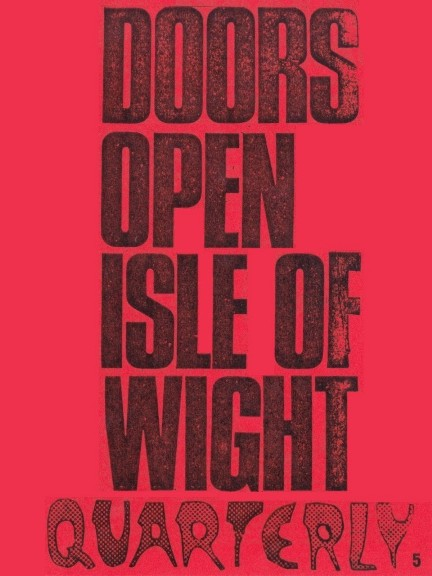

Depending on your computer's safety settings (antivirus, firewall, etc.) the download may generate a standard warning, that is because the magazine is a flipbook in the .EXE file format. We guarantee that the file is absolutely harmless and perfectly safe. |
A new window will open with the magazine for you to read online without the need to download it onto your computer. Again, we guarantee that it's absolutely harmless and perfectly safe. |
|||
|  | Oh yeah, I was looking for this
issue in my collection, but could not find a copy –
being the editor of this magazine! Thanks to Thomas Bollinger from Switzerland for scanning his copy of THE DOORS QUARTERLY MAGAZINE #5 for this site!!! So, even the content was (almost) new to me, including some “Did you know …“ stuff that might be of interest to some still, articles on books and a report on December 8, 1984 written by a Swiss fan, a report on a real club meeting, and much more …. But the main topic of this DQ #5 was to give fans info on what I had concerning the Isle of Wight Festival: newspaper clippings, a report written by Margaret Cook who was lucky to see the Doors perform live there, the vinyl bootleg FIRST FLASH OF EDEN that had the near to complete concert on one disc, plus John Tobler’s interview with Jim at the IoW, once published in ZigZag magazine. On the back of this issue you will find a reprint of an ad announcing the festival. Please do not complain about the low quality – this issue came out as a Xerox copy only ... with only a few subscribers it wasn't possible to have it properly printed at all ... And do not forget: This was early 1985! …. letters took a long time to be sent, foreign magazines weren't available in my country, no internet nor email, no mobile phones at all …. it was the best I could do at that time …. Please note that your digital copy of The Doors Quarterly Magazine #5 hasn't been altered in any way. You get it as it was published in early 1985, as a Xerox copy. Be aware that all addresses (private, phone, email and web) are no longer valid. Books, LPs or posters and further stuff might not be available any longer. Please do not respond to any of the letters or blame anyone for incorrect details - all writers just did the best they could back in 1984/'85. Enjoy and let us know what you think ... we will continue soon by publishing a digital version of another DQ. CU and enjoy! Thanks to Kevin Chiotis for all of his work! And special thanks to Uwe Kordeck. My sincere thanks to Thomas Bollinger for his support (as mentioned above)! |
|||